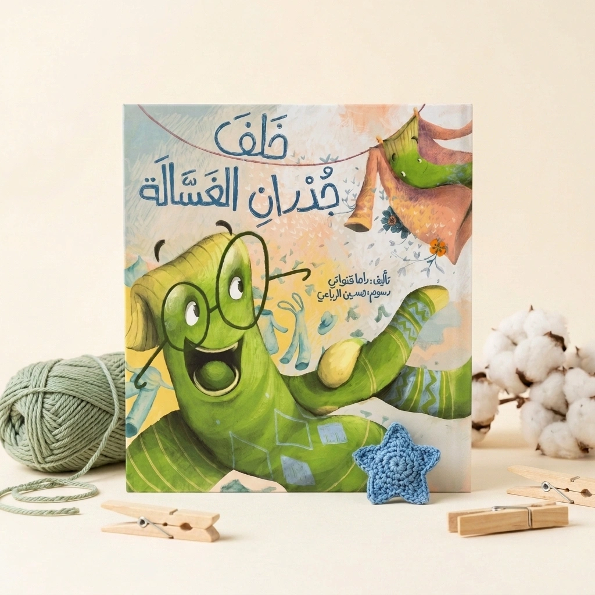
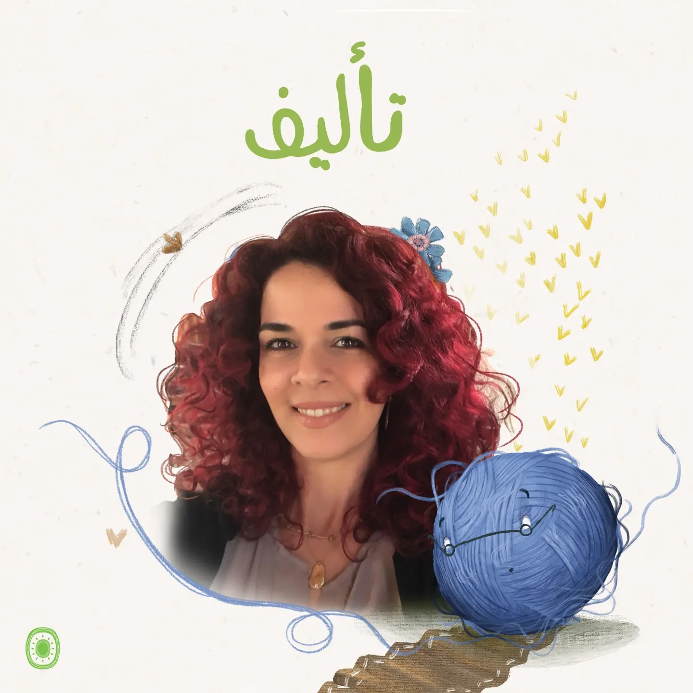
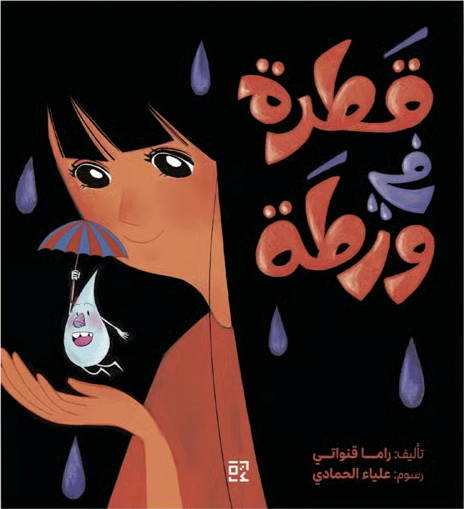
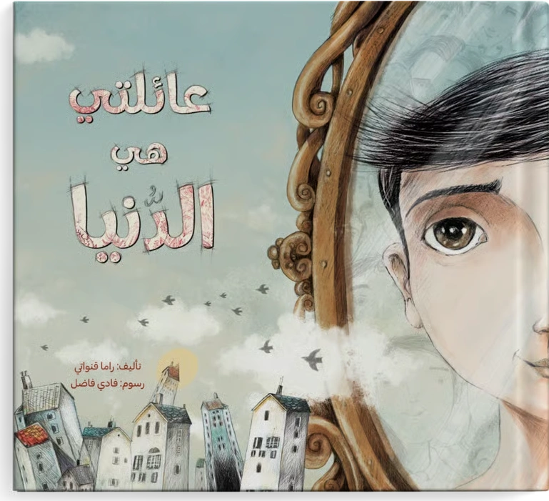
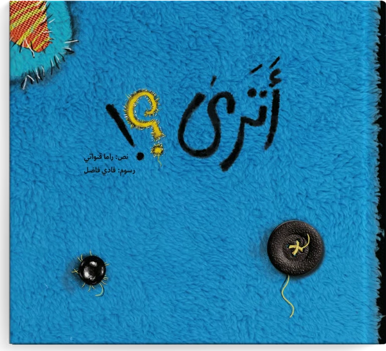
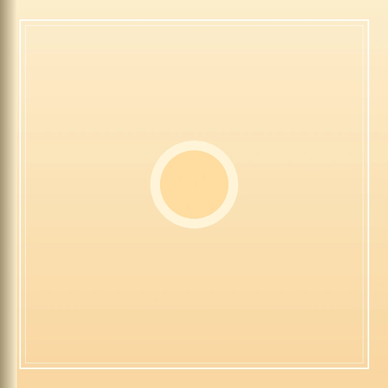
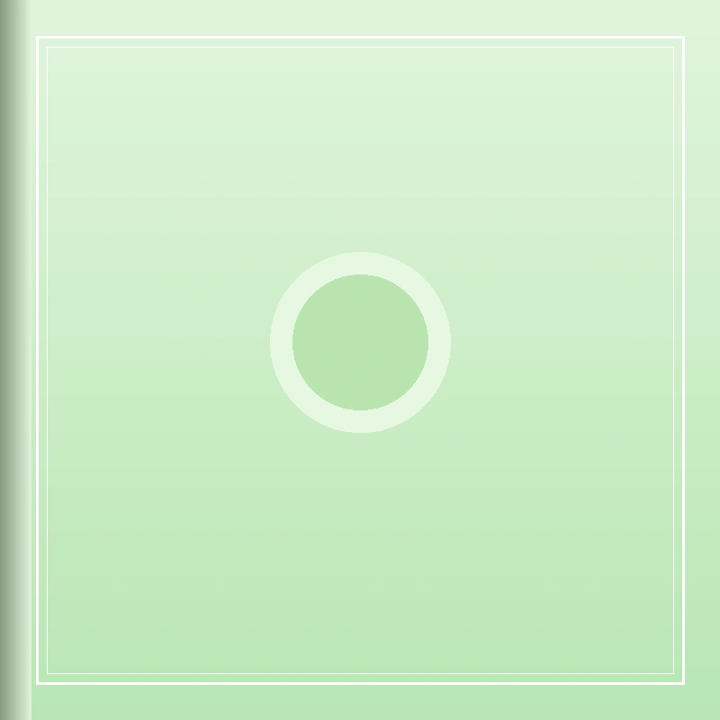
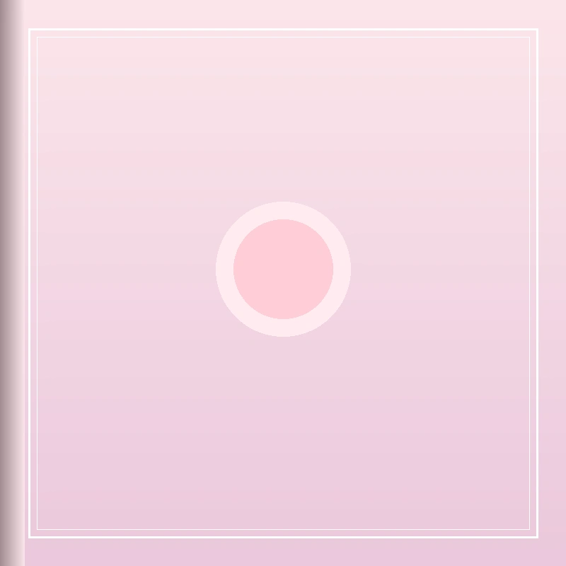
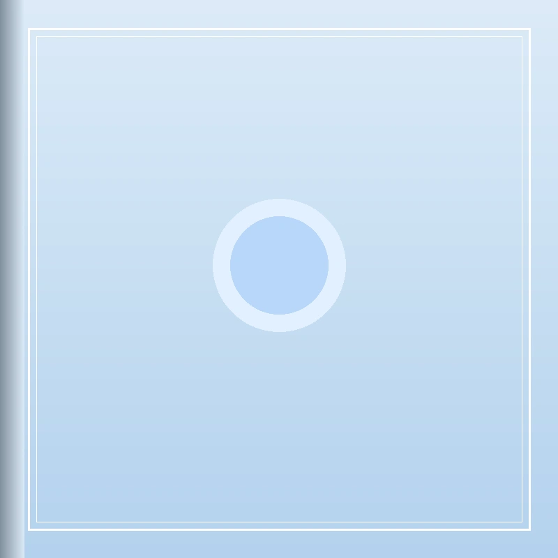
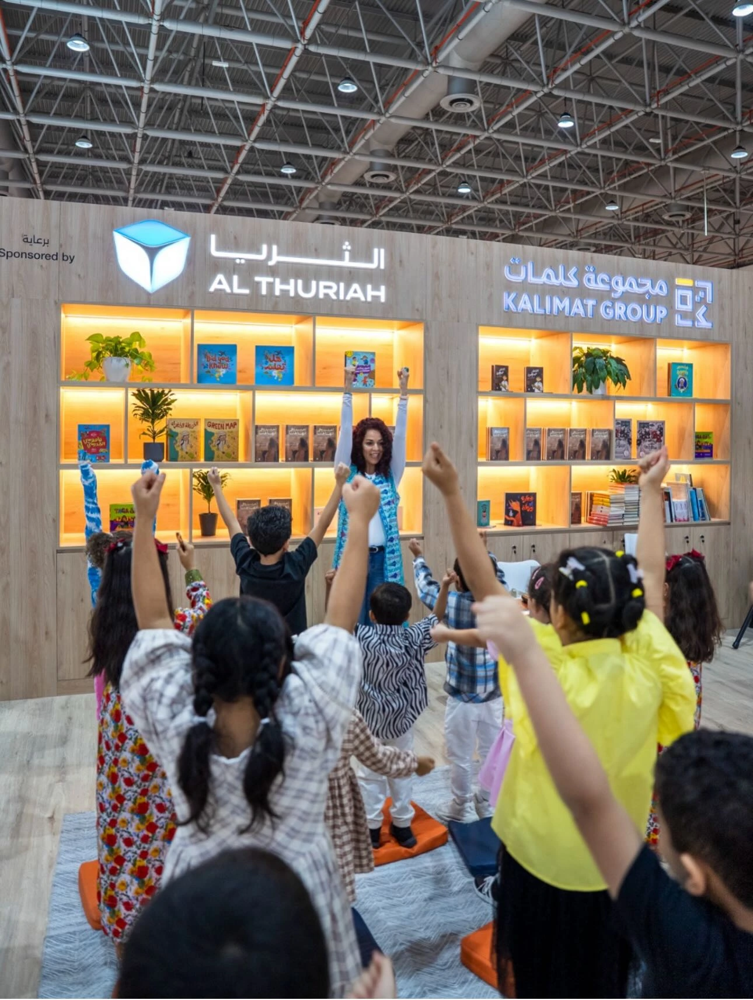

الأكثر مبيعًا 🔥خلف جدران الغسالة
إلى أين تختفي فردة الجورب حين تغيب عن الأنظار؟ مغامرة خيالية ممتعة تخوضها فردة جورب شجاعة خلف جدران الغسالة لتكشف عالمًا خفيًا لا يخطر على بال!
أنا راما قنواتي، أكتب للأطفال وأقرأ معهم وأعيش في عالمهم. أجمع بين خبرتي في التربية وشغفي بالقصة والسيناريو، لأصنع عوالم تدعو الصغار للدهشة، التعاطف، والتحليق عاليًا.

أعمال منشورة ومشاركات بالتعاون مع كبرى المنصات ودور النشر العربية
كل قصة نكتبها هي بذرة دهشة ومساحة آمنة لمشاعر الطفل؛ من مغامرة مشوقة وراء الغسالة إلى سر الدموع، ومن دفء العائلة إلى حكايات الشاشة.

الأكثر مبيعًا 🔥إلى أين تختفي فردة الجورب حين تغيب عن الأنظار؟ مغامرة خيالية ممتعة تخوضها فردة جورب شجاعة خلف جدران الغسالة لتكشف عالمًا خفيًا لا يخطر على بال!

الشارقة الدولي 💧حكاية إنسانية رقيقة تقترب من مشاعر الطفل حين يبكي، وتساعده على فهم دموعه والتعبير عما يختلج في صدره بود واطمئنان دون خوف أو خجل.

جائزة الشيخ زايد 🏆حكاية عميقة تتناول مشاعر الطفل اليتيم وأحلامه بالدفء، وتفتح آفاق التفكير حول العائلة والانتماء وتقبل الاختلاف بروح مليئة بالأمل والمحبة.

منظور الدبدوب 🧸عندما يرحل الطفل عن بيته بصحبة عائلته، تروى التجربة للمرة الأولى من منظور دبدوبه الصغير؛ حكاية عن الصداقة الوفية، الرحيل، وحلم العودة.

المولود الجديد ☀️كيف يستقبل الطفل قدوم أخ أو أخت جديدة إلى العائلة؟ معالجة ذكية ولطيفة للمشاعر المتباينة من فضول وقلق وفرح بأسلوب تربوي مبسط.

فضول واكتشاف 🐌حكاية مرحة ومحفزة للتأمل، تدعو الطفل إلى تبطئة خطواته أحيانًا وملاحظة عجائب العالم المحيط به بعين باحثة ومندهشة من صلب الطبيعة.

حنان وأمان 🌸عن حضور الأم الدائم في تفاصيل يوم طفلها حتى وإن غابت دقائق؛ قصة تزرع الطمأنينة والأمان النفسي في قلب الصغير في سنواته الأولى.

شجاعة وتجربة 🔍رسالة تشجيع لكل طفل يتردد أمام التجربة الأولى، ليرى أن التجربة والتساؤل هما المفتاح الحقيقي لفهم العالم واكتشاف إمكاناته الكامنة.

بدأت رحلتي مع أدب الطفل والتربية عام 2003، ومنذ ذلك الحين وأنا أؤمن أن القصة ليست مجرد وسيلة تسلية عابرة، بل هي مرآة سحرية يرى فيها الطفل نفسه، وأداة تربوية ناعمة تساعده على التعبير عن مخاوفه وفرحه وتساؤلاته.
انطلاقًا من تخصصي في الطفولة المبكرة، أستلهم نصوصي من تفاصيل الحياة اليومية البسيطة التي يعيشها الصغار؛ فردة جورب مفقودة تصبح مغامرة كبرى، ودمعة تسقط على الخد تصبح مدخلاً لفهم المشاعر الإنسانية، ولعبة دب محبوبة تروي معاني الوفاء والأمل.
«أكتب للأطفال، وأقرأ معهم، وأعيش في عالمهم.. لأن طفل اليوم ذكي وحساس، ويستحق قصصًا تحترم عقله وتلامس روحه.»
يمتد شغف راما بالكتابة إلى الشاشة الصغيرة؛ حيث يتطلب السيناريو الموجه للأطفال إيقاعًا بصريًا خاصًا، وحوارًا عفويًا، وقدرة على نسج القيم التربوية في قوالب درامية مشوقة تجذب انتباه الجيل الرقمي الجديد دون وعظ مباشر.
مشاركة متميزة في كتابة حلقات المسلسل التلفزيوني الشهير «تيلا تولا» الموجه للأطفال في مرحلة ما قبل المدرسة، والذي حقق انتشارًا واسعًا وحظي بمحبة الصغار والأسر في أرجاء الوطن العربي.
شاهد كواليس العمل من الاستديو ↗صوت يقرأ، وخيال يسمع، وأسئلة عفوية تفتح أبواب المحبة؛ جلسات القراءة الحية مع الصغار هي اللحظة الأحب إلى قلبي.
جلسات قراءة تفاعلية حية لكتاب «قطرة في ورطة» ضمن جناح مجموعة كلمات، بمشاركة عشرات الأطفال الذين عبروا عن مشاعرهم وتفاعلوا مع أحداث القصة.
شاهد تغطية الفعالية ↗إطلاق رسمي وحفل توقيع كتاب «خلف جدران الغسالة» مع دار قصص كيوي، مصحوبًا بورشة حكي للأطفال وأنشطة فنية مبتكرة استلهمت فكرة الجوارب الشجاعة.
شاهد فيديو الإطلاق ↗مشاركة ملهمة بالتعاون مع مبادرة «قطر تقرأ» ومكتبة قطر الوطنية؛ لقاءات جمعت الكاتبة بالأمهات والأطفال لتشجيع عادة القراءة اليومية في المنزل.
شاهد فيديو اللقاء ↗مقتطفات من لقاءات تلفزيونية وإذاعية وبودكاست تحدثت فيها راما عن عالم الكتابة للطفل وتحديات التربية.
لقاء معمق استعرضت فيه الكاتبة كيف نوازن بين جاذبية الصورة وسحر الكلمة المكتوبة، وكيف نجعل الكتاب الورقي رفيقًا محببًا للصغار.
حوار شائق حول محطات الانطلاق منذ عام 2003، ونقل الخبرة الميدانية مع الأطفال في الروضة إلى صفحات الكتب ونصوص الشاشة.
متاحة لدعوات الفعاليات، جلسات القراءة في المدارس والمكتبات، ورش العمل التربوية، وتكليفات التأليف وكتابة السيناريو للرسوم المتحركة.